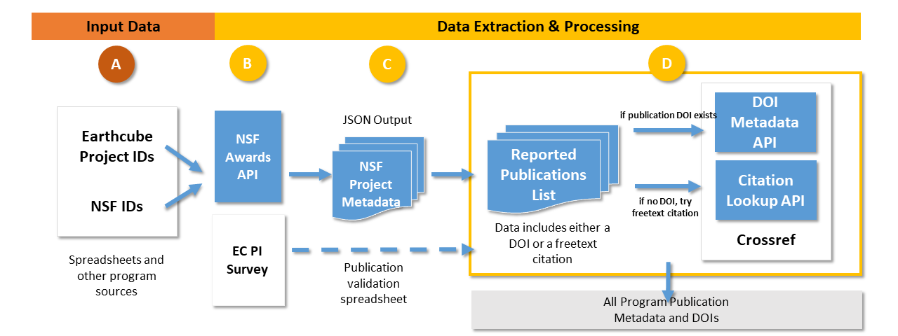
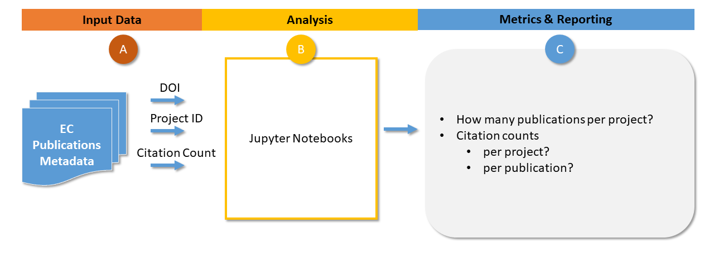
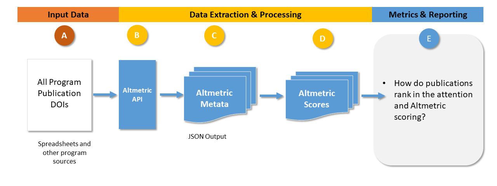

EC Program Metrics Methodology
Contents
EC Program Metrics Methodology#
The methodology for this analysis involves multiple data sources and several iterations of manual and automated efforts. This summary includes EarthCube project publications from its inception to projects whose funding initiated in or through 2021.
Phase 1: Input Data Extraction and Processing#
 (download png small, png large)
All Earthcube funded projects NSF identifiers were collected and project metadata gathered from the NSF API for funded projects and from ECO provided project data. This metadata contains the reported publication citations, some of which include DOIs.
underlying metadata was retrieved using the Crossref API, and those without, fulltext citations were automatically queried and matched with the correct DOI if it existed.
Phase 2: Analysis and Reporting#
 (download png small, png large)
After all metadata was obtained in subprocess (A), using the DOI, project ID and citation counts as primary keys to underlying data, Jupyter notebooks were developed in subprocess (B) to provide detailed underlying analysis of the EC publications. Reporting and metrics were the primary outputs reflected in subprocess (C) and in this and other documents.
All Earthcube funded projects NSF identifiers were collected and project metadata gathered from the NSF API for funded projects (https://www.research.gov/common/webapi/awardapisearch-v1.htm) and from ECO provided project data. This metadata contains the reported publication citations, some of which include DOIs. For those with DOIs, full metadata was retrieved using the Crossref API (https://www.crossref.org/documentation/retrieve-metadata/rest-api/), and those without, fulltext citations were automatically queried and matched with the correct DOI if it existed.
 (download png small, png large)
Primary Data Sources#
NSF Awards Database#
The publications examined in this analysis are drawn from the NSF’s Awards database, which contains information about publications that are reported by grant PIs as being associated with specific NSF grant awards.
The NSF database provides a query interface that returns lists of publications that have been reported by PIs of specific grants. Starting from the list of grant IDs provided by the ECO, we were able to compile all of the peer-reviewed publications reports for those grants.
Limitations of NSF database#
Self-reported - papers are reported to the NSF database by the grant award PIs through two mechanisms: 1) by reporting papers in the annual reports that are required by the NSF for all funded awards, and 2) by adding paper citations into the the NSF open access publication repository, https://par.nsf.gov/, and associating the papers with specific grant awards.
Temporal issues - There is typically a lag between when funding is awarded and when papers are written based on the funded work. Few papers may be written in the first year or two of a funded award, as the project efforts are focused on setting up collaborations, creating infrastructure, and/or collecting data. Once papers are being written, it can then take a year or more for a paper to be finalized, submitted, reviewed, and published. Due to these lags, papers related to the funded work may be published after grants close. Such papers may not be reported at all, once the PIs are no longer required to submit annual reports.
Collaborative grants - Many NSF grants are awarded as collaborative awards. In these cases, proposals are submitted collaboratively, but funds are awarded to each collaboration organization as a separate award in the NSF system. For example, the 78 EarthCube grant IDs analyzed in this project map to 46 unique projects due to many of the grants being collaborative awards. Each collaborative award is subject to the annual reporting requirement, which results in the same papers being reported under multiple grant IDs. Analyses based on the NSF database must take this into account to avoid double counting publications.
EarthCube publication survey#
In April 2022, we worked with the EarthCube Office to create a survey of EarthCube project PIs, to gather publications that were not reported to the NSF database, either because the publications were produced after the timeline of funded projects, or because the projects are still ongoing, and have not reported their final publication lists yet. The survey added about 20-30 publications that were not reported via the NSF publications database, for about a 10% increase in the overall publication total.
Limitations of survey#
While the survey yielded a few more publications than normal, there were a few key issues to consider:
older project PI non-response: the projects further in the past were less likely to have their PIs respond to the survey, perhaps reducing the accuracy of peer-reviewed publications that were otherwise not reported to the NSF.
non-publication: some projects did not produce peer-reviewed publications, and thus no DOI.
time constraints: the survey was open for a limited time and PIs who were unable to respond, my not have responded because there wasn’t enough time to do so because of lack of resources (time), other higher priority commitments or other reasons.
Data Processing#
DOI Lookup#
DOIs are important for a couple of reasons. First, they are very useful to disambiguate among entries that may be duplicates in the results from the NSF database, whether because of accidental duplicate uploads by the grant PIs or because of the same papers being reported by multiple participants within collaborative grants. Other metadata about papers can of course be used to disambiguate paper citations, including titles, authors, and the journal information (such as volumes, issues, and dates), but DOIs simplify this process significantly. Second, DOIs are useful because they allow for querying other services for additional information about the papers, specifically for the purposes of this study, citation information.
Building and filtering the publication corpus#
Papers with no DOIs were not analyzed because it is not possible to consistently gather citation information from the available services, while papers with DOIs were compiled as follows:
(a) most paper DOIs were reported in the NSF publications data or by the PI via the survey, (b) for papers where DOIs were not reported in the NSF data or via the survey, we attempted to find the DOI either by an automated matching service provided by CrossRef, or by manual look-up. We also performed manual look-up of papers and DOIs when the DOIs in our corpus were not working. Through this effort a handful of DOIs were recovered that were mis-typed or somehow reported incorrectly, (c) for DOIs that failed to return metadata, they were queried against Datacite to ascertain whether they were software, data, technical report or other digital asset that was not a publication, but equally important as a program output. There were fewer than 15 such DOIs, but their analysis can be seen here.
Metadata collection#
For each DOI, we gathered an extensive set of metadata from Crossref, including:
Authors
Publication date
Journal
Cited works
Cited counts
and other publications details - e.g. title, pages, etc.
We coupled this metadata with information about the associated EarthCube grant, such as the awarded PIs and institution, grant type, and grant timeline.
Additional Citation Information and Metadata#
For all DOIs, we queried additional citation indexes to return any available citation information. The citation indexes we used are listed below, and each service has strengths and weaknesses, but all data obtained was that which was freely available through API access. Some are wider in scope, meaning that they index a larger set of journals. Some provide only citation counts, and some provide full information about all articles that cite a given DOI.
DataCite - provides metadata and citation counts for non-articles, e.g. data and software.
Altmetrics - provides an indicator of interest in an article on social media
Citation counts from all of these services were compiled to show similarities and differences across the services. We note in the analysis below which specific citation services were used for each specific analysis.